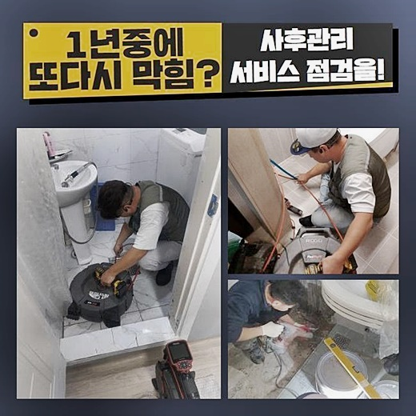
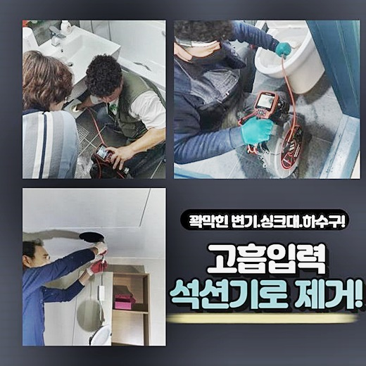
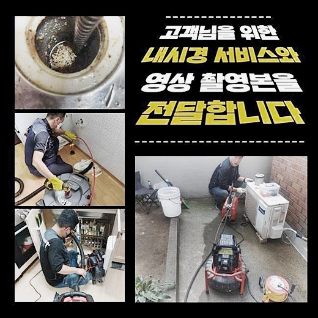
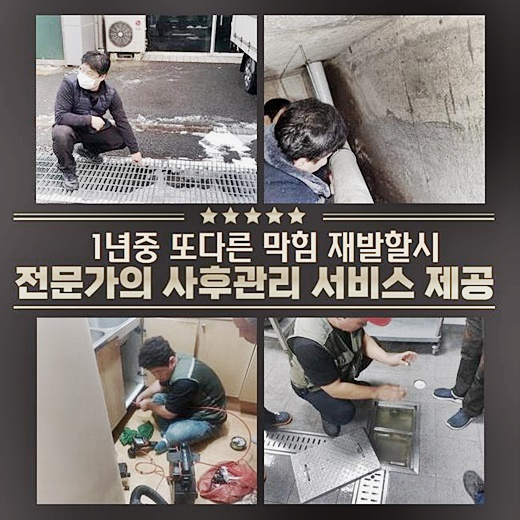

🏠 용산 청파동씽크대배수구역류 원효로2가 하수구뚫는곳 출장설비
용인 싱크대막힘 전문 시공 후기

📋 작업 개요
- 위치: 용인
- 서비스 유형: 싱크대막힘, 하수구막힘, 배관막힘, 집수정막힘, 역류해결, 뚫는업체, 배관청소, 고압세척
- 작업 일시: 2024. 6. 18. 15:28
- 업체명: 하수구수사대 (010-5615-2118)
🔍 문제 상황
용산 청파동씽크대배수구역류 원효로2가 하수구뚫는곳 출장설비
물이 안빠지는 일이 생기게되면 불편들이 한두가지가 아닌데요
사례를 통한 전반적인 문제들에대해서 안내해드릴테니 알아두시면 득이 될거라 생각해요
금일 알아볼 원인은 구분건물 관리하시는 분이 문의해주셨습니다
의뢰인은 일년 주기로 점검을 실시했으나 지속적으로 연립주택 내 집에서 막히는 증세가 발생된다고 말씀하셨어요
그전엔 소개를 받아 근처 업자께 문의를 했지만검색해보시고는 스프링말고도 전문적인 장비들이 많다는걸 아셨고 하수구 관리에 최적화된 업체들이 상주하는것을 인지하게 되었고 그 와중에 저희전문진에게 문의를 주셨습니다
정기적으로 세척을 해줘도 오수가 배출되지않으면 그 기조는 집 내부의 하수관에 자리한것이아닌 집수설비에도 있다는것을 알 수 있게하는 문제니 말씀드리겠습니다
증세를 인지하고 신속하게 방문한 장소는 한 다세대 구분건물였고, 진단과정을 거치니 증상의 까닭은 집수설비에 존재했습니다

🔎 원인 분석
💡 전문가 진단: 정밀 진단 장비를 사용하여 슬러지의 고착 여부를 판명하고 타격/세척 작업을 실시했습니다.
바깥의 집수시설부의 입구를 열었더니 원활하게 배출되지않는 형태였고 하부엔 오염된 슬러지들이 있어 악조건의 모습이었습니다
집수시설에도 잔해물이 많으면 안쪽도 오염되어있을거란 염두에두고 내시경기기를 사용해 정밀검수를 해보았습니다
현재 쓰이는 내시경장치는 오염된 하수도를 보여주는 내시경장치로 시야가 넓고 화질도 좋기때문에 굴곡진 하수관일지라도 원인을 잡아내요
잔재가 얼마나 존재하는지 정확하게 관찰할 수 가능하기에 해당 장소에선 중앙집수 설비에 기름기들이 존재하던 모습이였는데 어떻게 막히게된것인지 확인해야했습니다
증상들이 야기된 구간마다 내시경기기를 놓고 이 부분이 어느곳인지 알기위해서 탐지장치를 사용하여 지점을 찾기 시작했죠
탐지도구라 함은 내시경장치의 상단부를 하수도에 넣어주고 바깥쪽에서 진단하면 내시경이 자리한 지점에서 알림이 발생하는데그 반경이 25cm 사이로서 찾지못하는 경우는 없습니다
배관의 경우 직접적으로 안보이기에 어디가 문제가 발발한건지 예상만하기엔 위치들이 복잡하므로 관로탐지장치는 길이가 긴 하수도를 청소하는 경우에 활용되요
내시경은 안쪽에서 떨어져있어도 지점을 가늠할수 있지만 내시경케이블들을 내리면서 투입하면 지금의 지점이 어느곳인지 알수가없어서 탐지장치와 찾게됩니다
한 곳에서만 잔해들을 제거하기엔 수직관 말미에 슬러지가 많았으므로 수출과 입구에서 도구를 써서 컨택하는 구간에서 청소과정을 수행해주는것이 적절한 것이라 결정했답니다

🔧 작업 과정
고압수청소도 실시가능하나 방문드린 곳에서는 외부배관부터 안쪽에 구불구불하고 길지않은 길이로인해 스케일링으로도 세척이 가능했습니다
의뢰인분에게 이에 해당하는 작업들을 안내한 후 출수부분도 막힘양상이 심했기에 현재까지 청소들을 진행해도 호전되는 양상이 없어서 저희는 외부시설까지 시정해드리기로 했죠
보통의 때에는 하수들이 흐르는것이 맞지만 통로가 어디인가 못찾을정도로 문제가 심한 모습이였는데 긴 기간에걸쳐 굳게 흡착된 잔해물도 쉽게 목격했습니다
석션장치를 이용하여서 안쪽 이물들을 흡입했는데 심층부까지 고인 물이 빠질 기미가없어 오염된 것들이 많았죠
석션장치로 말씀드리면 내외부의 압력들을 사용하여 세척해주는 장비이므로 접촉하는 지점에 틈들을 막는다면 공기가 흐르지않아 강해진 압을 유지시켜줍니다
반복적인 흡입을 수행하면 고착되지않은 오염물이 빠지면서 2차적으로 빼줘야하는건 고착된 이물이기에 스케일링과정이 빠른 시간안에 이어가게됩니다
곧장 샤프트장치를 사용해서 배관의 이물제거를 진행해보았는데 이 장치는 드릴들을 꽂아주고 켜줄 시에 원심력이 라인선으로 흘러가 상단부품인 체인쪽으로 전송시킵니다
그리고 사슬모양의 노커체인 부분이 원심력을 받아 내부의 이물질들을 타격해주며 탈락하게끔하고 배관컨디션을 복구시키는데석션만으로는 세척이 안되었던 부위를 샤프트기기로 메워서 깔끔한 배관을 만드는거죠
말씀드린 과정들은 저희의 전문가들은 내시경장치를 투입시켜 안측의 진행척도를 체크해가며 작업함으로써 샤프트기기가 이용되면서 빠진 데가 없게 구간구간마다 가능한것이죠
입구에서부터 이물작업이 실시되고 뜬금없이 수직배관 끝까지 청소하고 엘보배관을 확인하고 외부쪽으로 나아가는 구간에 맞닿은것을 알았는데요
그 다음으론 작업위치를 바꿔 수출부로 가서 스케일링들을 실시하여 잔해가 쌓여 배수진행이 불가하던 집수설비는 세척 이후 물빠짐이 이뤄지는걸 목격했어요
끝으로 샤프트장비를 투입한 뒤서 내측을 구간구간마다 깨끗하게 만들어주었고 작업 후내시경장치로 하수관은 잘 깨끗해진 걸 체크하고 청소과정을 끝냈어요
집수정시설도 정리해주고 발걸음을 돌렸습니다


✅ 작업 완료
이처럼 장기에 걸쳐 막히게된 하수관들도 저희전문인은 문제해결력을 바탕으로 컨디션을 돌려놓은 곳이였어요
여러분한테 문제들이 생기게되어 빠른 방문을 해주는 전문가가 작업을 해줬음하시면 저희에게 말씀해주세요
전국적으로 한시간안팎으로 내방이 가능하며 절대적으로 작업의 퀄리티를 보장하니 주저없이 의뢰해주세요!
이것말고도 궁금증들이 있다라고하면 문의 중에 즉각 답변으로 말씀드리니 염려는 하지 않으셔도 되요!


⚠️ 주방 싱크대 배관 막힘 예방 수칙
- ✅ 기름기가 묻은 식기나 프라이팬은 설거지 전 키친타올로 반드시 기름때를 닦아내세요.
- ✅ 주기적으로 싱크대 개수대에 뜨거운 물을 가득 받아 한 번에 내려 배관 내부 기름을 씻어내세요.
- ✅ 배수구 거름망을 미세한 필터로 사용하시고 음식물 찌꺼기가 틈으로 새어 들지 않게 관리하세요.
- ✅ 베이킹소다와 식초를 뜨거운 물과 함께 일주일에 한 번씩 부어주면 배관 살균과 막힘 예방에 좋습니다.
💡 핵심 정리
- 확실한 장비 작업(내시경 점검 및 샤프트 스케일링)으로 원인을 뿌리 뽑습니다.
- 작업 후 1년 이내에 동일한 부위 재발 시 100% 무상 A/S 서비스를 보장합니다.
- 서울 · 경기 · 인천 전 지역에 24시간 언제든 긴급 출동할 수 있도록 항시 대기 중입니다.
❓ 자주 묻는 질문 (FAQ)
🚨 용인 싱크대막힘 문제로 고민이신가요?
정확한 원인 진단과 확실한 시공으로 재발 없는 해결을 약속드립니다.
24시간 긴급 출동 | 서울 · 경기 · 인천 전지역 | 1년 내 재발 시 무상 A/S